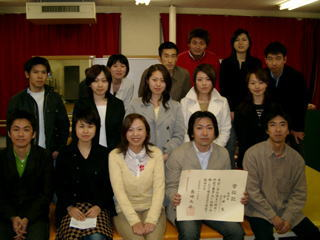

一緒に動物実験を行う卒業生は年々増え、時には他校の卒業生もメンバーに加わり、また、吉村教授の他に加藤克知教授（解剖学）や折口智樹教授（膠原病・生化学）の協力をいただけるようになると研究テーマは広がり、技術も充実していきました。大学院が開設されていないにも関わらず、当時の最盛期にはメンバー数が15人にもおよび、特に女性メンバーが多かったのが特徴でした。そして、研究室というよりもむしろ研究クラブ（？）のような存在で、周囲からは「ラットクラブ」や「ラット班」、あるいは「ねずみっ子クラブ」などと呼ばれていました。
このような経緯の基、医療技術短期大学部は平成13年に医学部保健学科に改組され、平成18年には大学院医歯薬学総合研究科保健学専攻（修士課程）が開設されました、そして平成19年10月に沖田先生が教授に就任し、初めて「研究室または教室」の認識が生まれ、現在は保健学専攻修士課程や医療科学専攻博士課程の大学院生もメンバーに加わり、一般にいう研究室として活動を行っています。

沖田教授が博士号を取得した時の写真です。
（当時、沖田教授は助手でした）